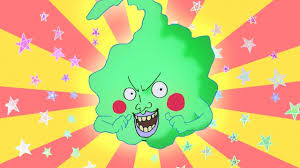
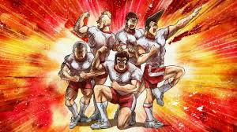
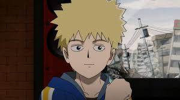
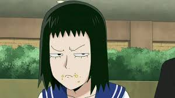
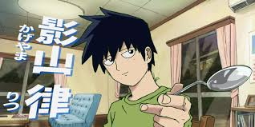

MOB
Camiseta Blanca Poison?
.jpg)
como no iniciar hablando del protagonista Mob simplemente es luz, desde el inicio se nos presenta como un niño inseguro de si mismo y lo unico que lo hace "especial" son sus poderes psiquicos, Mob como cualquier persona con el tiempo evoluciona, poco a poco se vuelve una mejor persona y esto es gracias a los lazos que va formando con el tiempo, enseñandonos que en esta vida nunca estaremos siempre solos, que con un poco de esfuerzo para nosotros mismos todo puede mejorar
mob es un ser de luz que avanza como persona y crece conforme lo vas viendo, su personalidad simplemente atrapa y te hace tenerle un cariño como a ninguna otra persona
leer mas
REIGEN
El Poder Las Palabras
Un mentiroso con una labia que podia cambiar el mundo, Reigen en un principio se nos presenta como ualivio comico, simplemente un farsante que se aprovecha de los poderes de mob, que tan equivocado estabcon mi primera impresion. Reigen si es un farsante, un mentiroso total y una verguenza para su familiapero, tambien es un personaje con un transfondo que aunque corto tiene mucho nivel, Reigen es alguieque admira a Mob y esa misma admiracion es la que lo hizo a el crecer como persona en un momento dondsu vida no tenia sentido
un hombre normal, un humano corriente como tu y como yo, protagonista unicamente de su propia historiaun mentor por excelencia y aunque muchas veces alivio comico, sus palabras son una enseñanza no solpara los demas personajes, sino tambien para nosotros mismos
leer mas
HOYUELO
De Verdad Queria Ser Dios?

esto va de personajazo en personajazo, simplemente otro gran alivio comico, hoyuelo inicia siesolamente un villano secundario mas, con su objetivo de convertirse en un dios hoyuelo hizo lo pudo para conseguir su objetivo, manipulando a un gran poblacion de la ciudad para que asi pudiinicar si secta, tras su derrota a manos de mob, se hace un miembro mas de la pandilla, un simalivio comico al que poco a poco todos le agarramos cariño.
la traicion es una de las cosas mas complejas que hay en una historia y cuando hoyuelo traicia mob por seguir con su sueño juro que no sabia como sentirme, le tenia rabia y fe de recapacitara, al final hoyuelo nos muestra de que el no queria ser un dios, simplementesoledad lo estaba consumiendo y solo queria gente con la que pudiera caminar como un amigo
leer mas
CLUB DE FISICULTURISMO
Penser Que Serian Una Mierda

aqui no hablo de un solo personaje, hablo de un grupo, el club de fisiculturismo es simplmeun grupo hermoso, la verdad en un inicio pensaba que serian patanes que molestarian a Mob porforma de ser, pero nada mas lejos de la realidad (este anime siempre me dio malas primeimpresiones) los del club de fisiculturismo solo son estudiantes con una fuerte pasion con las coque hacen, siempre le tienden una mano a quien lo necesite y la forma en la que ayudaron a Mosiempre lo apoyaron sin importar simplemente me hace verlos con ojos de admiracion, porqueverdad, que lindo seria pertecer al club de fisiculturismo
el club de fisiculturismo es mas que un grupo, es un apoyo para todos, toda persona que necesencontrar un camino de mejora puede hablar con los del club, ellos lo ayudaran porque notrata de la fuerza ni de los musculos, se trata de esforzarnos cada dia, por ser un poco meque ayer.
leer mas
HANAZAWA
El Amigo Que Todos Deberian tenerle

Teru Hanazawa, un personaje al que tambien amo (todos los personajes de Mob Psycho entrañables) inicia siendo un antagonista, de hecho fue el primer antagonista que nos mostromounstroso potencial de Mob, creyendo en la filosfia de que el mas fuerte puede hacer lo que quiutilizo sus poderes psiquicos para su beneficio propio, gobernando el colegio gracias a este usosus poderes. cuando pelea con Mob el personaje ve su punto mas bajo, su vida se ve expuesta debidque el mas fuerte no es el y ademas de eso no puede creer como Mob siendo tan fuerte no use poderes para su beneficio personal. como alguien tan poderoso puede decir que el no es especiaque sus poderes no lo hacen especial. simplemente un golpe no solo a su orgullo sino tambien aestilo de vida
despues de la pelea, que fue una humillacion tanto fisica como psicologica, Hanazawa da un gde 180 grados, nacio en el una admiracion muy fuerte por Mob, como un niño que ve a un paTeru admira la forma en la que Mob ve el mundo y sigue su ejemplo dandose cuenta que los podeno nos hacen especiales, lo que nos hace especiales es nuestra forma de ver el mundo.
leer mas
KURATA
Ningun Sueño Es Absurdo

los sueños hacen parte de nosotros, desde siempre sin importar la edad o el momento siempre tendremos un sueño ya sea a largo o al corto plazo, para mi Kurata representa eso, la lucha por un sueño, pero no por un sueño convencional sino, un sueño que muchos pueden condierar absurdo, Kurata tiene el sueño de poder algun dia ver un Ovni, sueño que reprimio durante mucho tiempo por lo absurdo que sonaba, pero, ¿De verdad hay sueños absurdos? para mi no, los sueños son pequeñas cosas que nos mantiene vivos y les da un sentido mas profundo a nuestra vida.
El sueño de ver Ovni, de ser como alguien mas, de tener un mejor fisico, de ayudar a todos los que puedas. todos tenemos un sueño y en esta obra, Kurata es una pequeña Luz, que brilla con gran fuerza siempre que se trata de su sueño con una luz capaz de opacar al sol, porque los sueños siempre viviran con nosotros y asi como Kurata, nosotros tambien debemos esforzarnos para poder realizar los nuestros.
leer mas
RITSU
Admiro a Mi Hermano

muchos tenemos hermanos, yo personalmente soy el hermano mayor de 3 mocosos y entiendo totalmente a Mob cuando decia que le daba miedo Herir a Ritsu, no soy un hermano menor, no me puedo poner en los zapatos de Ritsu, pero entiendo el amor de hermanos, ritsu admira la luz que da Mob, para Ritsu Mob es un sol un sol que puede ser calido y despues desprender un calor asesino, ritsu admira ese sol, espera llegar a ser como el, para protegerlo de cualquier obstaculo que pueda tener Mob en su vida.
el momento en el que Mob esta destruyendo todo y Ritsu se interpone simplemente me parece bello, hasta ese momento se habia dicho que Ritsu le tenia miedo al descontrol de Mob, pero, Ritsu demostro que es mas grande el amor que le tiene a su hermano que cualquier miedo del pasado. desarrollando su medidor de emociones, debido al amor que le tiene a su hermano y al profundo deseo que tenia de que volviera a ser el mismo.
leer mas